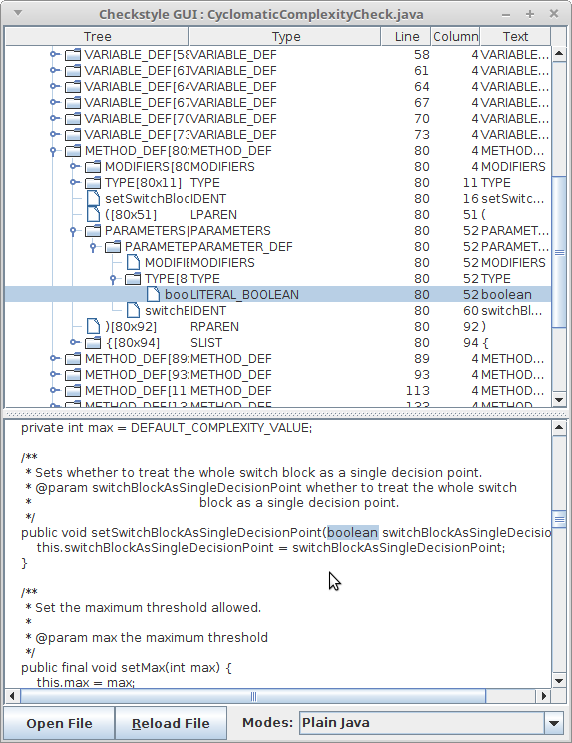

Content
- Content
- Overview
- Writing Checks
- Java Grammar
- Printing a Java tree structure
- The Checkstyle SDK Gui
- Understanding the visitor pattern
- Visitor in action
- Understanding token sets
- Comment Tokens in AST
- Navigating the AST
- Defining Check Properties
- Logging violations
- Integrating Checks
- Limitations
- Writing FileSetChecks
- Declare check's external resource locations
- Huh? I can't figure it out!
- Contributing
Overview
OK, so you have finally decided to write your own Check. Welcome aboard! This is a really easy thing to do. Very basic Java knowledge is required to write a Check. It is good practice even for students. There are actually two different types of checks that can be made, each with their own requirements. Before you start coding, you will have to find out which kind of Check you want to implement.
The functionality of Checkstyle is implemented in modules that can be plugged into Checkstyle. Modules can be containers for other modules, i.e. they form a tree structure. The top level modules that are known directly to the Checkstyle kernel (which is also a module and forms the root of the tree) implement the FileSetCheck interface. These are pretty simple to grasp: they take a set of input files and fire violation messages.
Checkstyle provides a few FileSetCheck implementations by default. One of them is the TreeWalker. A TreeWalker supports submodules that are derived from the AbstractCheck class. The TreeWalker operates by separately transforming each of the Java input files into an abstract syntax tree and then handing the result over to each of the Check submodules, which in turn have a look at a certain aspect of the tree.
Writing Checks
Most of the functionality of Checkstyle is implemented as Checks. If you know how to write your own Checks, you can extend Checkstyle according to your needs without having to wait for the Checkstyle development team. You are about to become a Checkstyle Expert.
Suppose you have a convention that the number of methods in a class should not exceed 30. This rule makes sense. A class should only do one thing and do it well. With a zillion methods chances are that the class does more than one thing. The only problem you have is that your convention is not checked by Checkstyle. You'll have to write your own Check and plug it into the Checkstyle framework.
This chapter is organized as a tour that takes you through the process of writing a Check step by step and explains both the theoretical foundations and the Checkstyle API along the way.
Java Grammar
Every Java Program is structured into files, and each of these files has a certain structure. For example, if there is a package statement, it is always the first line of a file that is not comment or whitespace. After the package statement comes a list of import statements, which is followed by a class or interface definition, and so on.
If you have ever read an introductory level Java book, you probably knew all of the above. And if you have studied computer science, you probably also know that the rules that specify the Java language can be formally specified using a grammar, though this statement is simplified for didactic purposes.
There are tools which read a grammar definition and produce a parser for the language that is specified in the grammar. In other words, the output of the tool is a program that can transform a stream of characters (a Java file) into a tree representation that reflects the structure of the file ( an Abstract Syntax Tree or AST). Checkstyle uses the parser generator ANTLR, but that is an implementation detail you do not need to worry about when writing Checks, as this well tested parser will parse Java files for you.
Printing a Java tree structure
Checkstyle can print an AST for a java file. To do so, run the checkstyle jar file with the -t or -T argument, providing the java file.
For example, take this MyClass.java file:
/**
* My <b>class</b>.
* @see AbstractClass
*/
public class MyClass {
}
|
1) Using -t as parameter.
java -jar checkstyle-X.XX-all.jar -t MyClass.java |
2) Using -T as parameter.
java -jar checkstyle-X.XX-all.jar -T MyClass.java |
|
|
As you can see, a very small java file transforms to a huge Abstract Syntax Tree, because this creates a very detailed tree that includes all components of the java file: object blocks, comments, modifiers, etc.
The Checkstyle SDK Gui
Still with us? Great, you have mastered the basic theory so here is your reward - a GUI that displays the structure of a Java source file. Run the gui with the command:
java -cp checkstyle-${projectVersion}-all.jar com.puppycrawl.tools.checkstyle.gui.Main
Click the button at the bottom of the frame and select a syntactically correct Java source file. The frame will be populated with a tree that corresponds to the structure of the Java source code.

In the leftmost column you can open and close branches of the tree. The remaining columns display information about each node in the tree. The second column displays a token type for each node. As you navigate from the root of the tree to one of the leafs, you'll notice that the token type denotes smaller and smaller units of your source file, i.e. close to the root you might see the token type CLASS_DEF (a node that represents a class definition), while you will see token types like IDENT (an identifier) near the leaves of the tree.
In the bottom of frame you can find buttons "Open File", "Reload File" and a dropdown list with parse modes to choose. In the first option, after choosing a file, a tree that corresponds to the java source file is shown. Notice that only files with the ".java" extension can be opened. The second option reloads the previously opened file from file system and rebuilds the tree.
In the dropdown list next to "Modes" are three different parse modes: "PLAIN JAVA", "JAVA WITH COMMENTS", "JAVA WITH JAVADOC AND COMMENTS". "PLAIN JAVA" mode shows the AST corresponding to the java source code without comments. In "JAVA WITH COMMENTS" you can also see comments blocks on the tree. Lastly, when "JAVA WITH JAVADOC AND COMMENTS" is chosen the javadoc tree builds and attaches to every comment block that contains javadoc.
Note: The text of a tree node and its children is selected automatically after either pressing "Enter" or double-clicking on it. There is no need to make a selection manually.
We'll get back to the details in the other columns later. They are important for implementing Checks but not for understanding the basic concepts. For now, it is sufficient to know that the gui is a tool that lets you look at the structure of a Java file, i.e. you can see the Java grammar 'in action'.
If you use Eclipse you can install the Checkstyle AST Eclipse Viewer plugin to launch that application from context menu on any file in Eclipse.
Understanding the visitor pattern
Ready for a bit more theory? The last bit that is missing before you can start writing Checks is understanding the Visitor pattern.
When working with an AST, a simple approach to writing Checks
on them would be to add a check() method to the class that defines
the AST nodes. For example, our AST type could have a method
checkNumberOfMethods(). Such an approach would suffer from a few
serious drawbacks. Most importantly, it does not provide an extensible
design, i.e. the Checks have to be known at compile time; there is no
way to write plugins.
Hence, Checkstyle's AST classes do not have any
methods that implement checking functionality. Instead,
Checkstyle's
TreeWalker
takes a set of objects that extend the
AbstractCheck
class. A Check provides methods that take an AST as an argument and
perform the checking process for that AST, most prominently
visitToken()
.
It is important to understand that the individual Checks do not drive the AST traversal (it is possible to traverse the tree manually, but not recommended). Instead, the TreeWalker traverses the tree using a tree traversal (depth-first) algorithm, and calls the Check's methods.
Before any visitor method is called, the TreeWalker will call
beginTree
to give the Check a chance to do
some initialization. Then, when performing the traversal from
the root to the leaf nodes, the visitToken()
method is called. Unlike the basic examples in the pattern book, there
is a visitToken() counterpart called
leaveToken
. The TreeWalker will call that
method to signal that the subtree below the node has been processed and
the TreeWalker is backtracking from the node. After the root node has
been left, the TreeWalker will call
finishTree
.
Visitor in action
Let's get back to our example and start writing code - that's why you came here, right? Remember that we are in the process of writing a check that limits the amount of methods in a class. Firing up the Checkstyle GUI and looking at a few source files, we notice that we are interested in the number of tree nodes of type METHOD_DEF. The number of such tokens should be counted separately for each CLASS_DEF / INTERFACE_DEF.
Hence, we need to register the Check for the token types
CLASS_DEF and INTERFACE_DEF. The TreeWalker will only call
visitToken for these token types. Because the requirements of
our tasks are so simple, there is no need to implement the other
methods (leaveToken(), finishTree(), etc.)
available to us from AbstractCheck. Here is our first shot at our
Check implementation:
package com.mycompany.checks;
import com.puppycrawl.tools.checkstyle.api.*;
public class MethodLimitCheck extends AbstractCheck
{
private static final int DEFAULT_MAX = 30;
private int max = DEFAULT_MAX;
@Override
public int[] getDefaultTokens()
{
return new int[]{TokenTypes.CLASS_DEF, TokenTypes.INTERFACE_DEF};
}
@Override
public void visitToken(DetailAST ast)
{
// find the OBJBLOCK node below the CLASS_DEF/INTERFACE_DEF
DetailAST objBlock = ast.findFirstToken(TokenTypes.OBJBLOCK);
// count the number of direct children of the OBJBLOCK
// that are METHOD_DEFS
int methodDefs = objBlock.getChildCount(TokenTypes.METHOD_DEF);
// report violation if limit is reached
if (methodDefs > this.max) {
String message = "too many methods, only " + this.max + " are allowed";
log(ast.getLineNo(), message);
}
}
}
Understanding token sets
There are four methods in Check class to control the processed TokenTypes - one setter setTokens(), which is used to define a custom set (which is different from the default one) of the processed TokenTypes via config file and three getters, which have to be overridden: getDefaultTokens(), getAcceptableTokens(), getRequiredTokens().
- getDefaultTokens() - returns a set of TokenTypes which are processed in the visitToken() method by default.
- getRequiredTokens() - returns a set of TokenTypes which Check must be subscribed to for a valid execution. If the user wants to specify a custom set of TokenTypes then this set must contain all the TokenTypes from RequiredTokens.
- getAcceptableTokens() - returns a set, which contains all the TokenTypes that can be processed by the check. Both DefaultTokens and RequiredTokens and any custom set of TokenTypes are subsets of AcceptableTokens.
Comment Tokens in AST
Before Checkstyle 6.0, there were no comments in the AST. Comments are not code and are ignored by compiler, so they were not the primary focus of Checkstyle, but more and more requests appeared to do validation of javadoc and comments. One simple solution was to receive the plain-text of the file in a Check, manually parse it for any custom comments and validation.
In version 6.0, a method was added to the AbstractCheck class which allows you to see comment nodes in the AST - isCommentNodesRequired(). When this returns `true`, comments are included in the AST alongside the code.
This feature is optional to maintain backwards compatibility with existing checks, as it changes the AST structure and many existing checks were not ready for this change. Checkstyle does not parse the files twice to include the comments. Comments were already in the grammar and parsed, but skipped during the creation of AST nodes.
Before execution, all Checks are divided into 2 groups (based on the isCommentNodesRequired
method): "PLAIN JAVA" and "JAVA WITH COMMENTS".
Checkstyle executes "java only Checks" first. When those checks are all finished,
Checkstyle appends the comment AST nodes to the AST and calls "comment Checks".
All Javadoc Checks that are a child of
AbstractJavadocCheck
are "comment Checks".
(See also 'Writing Javadoc Checks')
The following Comment specific tokens exist: SINGLE_LINE_COMMENT, BLOCK_COMMENT_BEGIN, BLOCK_COMMENT_END, COMMENT_CONTENT.
Navigating the AST
In the example above you already saw that the DetailsAST class
provides utility methods to extract information from the tree,
like getChildCount(). By now you have
probably consulted the API documentation - and if not, you should -
and found that
DetailsAST additionally provides methods for navigating around
in the syntax tree, like finding the next sibling of a node, the
children of a node, the parent of a node, etc.
These methods provide great power for developing complex Checks. Most of the Checks that Checkstyle provides by default use these methods to analyze the environment of the ASTs that are visited by the TreeWalker. Don't abuse that feature for exploring the whole tree, though. Let the TreeWalker drive the tree traversal and limit the visitor to the neighbours of a single AST node.
Defining Check Properties
OK Mr. Checkstyle, that's all very nice, but in my company we have several projects, and each has another number of allowed methods. I need to control my Check through properties, so where is the API to do that?
Well, the short answer is, there is no API. It's magic. Really!
If you need to make something configurable, just add a setter method to the Check:
public class MethodLimitCheck extends AbstractCheck
{
// code from above omitted for brevity
public void setMax(int limit)
{
max = limit;
}
}
With this code added, you can set the property max for the
MethodLimitCheck module in the configuration file. It doesn't get any
simpler than that. The secret is that Checkstyle uses
JavaBean reflection to set the JavaBean properties. This works for all
primitive types (for example boolean, int, and long), Strings, and arrays of these types.
Logging violations
Detecting violations is one thing. Presenting them to the user is
another. To do that, the Check base class provides several log
methods, the simplest of them being Check.log(String). In your
Check you can simply use a verbatim violation string as the argument, i.e.
log("Too many methods, only " + mMax +
" are allowed");. This will
work, but it's not the best possible solution if your Check is
intended for a wider audience.
If you are not living in a country where people speak English, you may have noticed that Checkstyle writes internationalized violation messages. For example, if you live in Germany the violation, messages are German. The individual Checks don't have to do anything fancy to achieve this. It's actually quite easy and the Checkstyle framework does most of the work.
To support internationalized violation messages, you need to create or reuse an existing
messages.properties file alongside your Check class (
example).
The Java file and the properties files should be in the same
directory. Add a symbolic violation code and an English
representation to the messages.properties. The file should
contain the following line: too.many.methods=Too many methods, only {0} are
allowed. Then replace the verbatim violation message with
the symbolic representation and use one of the log helper
methods to provide the dynamic part of the message (mMax in this
case): log("too.many.methods",
mMax);. Please consult the documentation of Java's
MessageFormat
to learn about the syntax of format strings (especially about
those funny numbers in the translated text).
Supporting a new language is very easy now. Simply create a new messages file for the language, e.g. messages_fr.properties to provide French violation messages. The correct file will be chosen automatically, based on the language settings of the user's operating system.
Integrating Checks
The great final moment has arrived! You are about to run your
Check. To integrate your Check, add a new subentry under the
TreeWalker module of your configuration file. Use the full
classname of your Check class as the name of the module.
Your configuration file config.xml should look something like this:
<?xml version="1.0"?>
<!DOCTYPE module PUBLIC
"-//Checkstyle//DTD Checkstyle Configuration 1.3//EN"
"https://checkstyle.org/dtds/configuration_1_3.dtd">
<module name="Checker">
<module name="TreeWalker">
<!-- your standard Checks that come with Checkstyle -->
<module name="UpperEll"/>
<module name="MethodLength"/>
<!-- your Check goes here -->
<module name="com.mycompany.checks.MethodLimitCheck">
<property name="max" value="45"/>
</module>
</module>
</module>
To run the new Check on the command line compile your Check,
create a jar that contains the classes and property files,
e.g. mycompanychecks.jar. Then run
(with the path separator
system property ("path.separator") adjusted to your platform:
Linux/Unix - ":", Windows - ";"):
For Linux/Unix OS:
java -classpath mycompanychecks.jar:checkstyle-${projectVersion}-all.jar \
com.puppycrawl.tools.checkstyle.Main -c config.xml myproject
For Windows OS:
java -classpath mycompanychecks.jar;checkstyle-${projectVersion}-all.jar ^
com.puppycrawl.tools.checkstyle.Main -c config.xml myproject
Did you see all those violations about "too many methods" flying over your screen? Congratulations. You can now consider yourself a Checkstyle expert. Go to your fridge. Have a beer.
Please consult the Checkstyle
configuration manual to learn how to integrate your Checks
into the package configuration so that you can use MethodLimit instead of the
full class name.
Limitations
There are only a few, but important, limitations for Checkstyle. These pertain to Java specifically, as well as regular text files.
For Java,
-
Code has to be compilable by
javacto get valid violations. If it is not, you can get hard to understand parse errors. -
Java
tokens (identifiers, keywords)
should be written with
Unicode
characters ONLY,
no
Unicode escape sequence
support (i.e.
\uXXXX) in keywords and identifiers. - Javadoc comments are limited to ASCII characters until Issue #10629.
- You cannot determine the type of an expression. Example: "getValue() + getValue2()"
- You cannot determine the full inheritance hierarchy of type.
- There is currently no support for analyzing code generated at compile time
by libraries such as Lombok or AutoValue using annotations like
@Getteror@Data. See issue #13538 for more details and potential workarounds.
In addition to Java files, there are similar limitations that apply to all type of text files:
- Checkstyle cannot properly handle a file's binary Byte Order Mark (BOM), like UTF8's Unicode \uFEFF.
- You cannot see the contents of other files. You have access to the content of one file only during all Checks execution. All files are processed one by one.
This means that you cannot implement some code inspection features that are available in advanced IDEs like Eclipse, IntelliJ IDEA, SpotBugs, Sonarqube.
For example you will not be able to implement:
- a Check that finds redundant type casts or unused public methods.
- a Check that validate that user custom Exception class inherited from
java.lang.Exception class.
Writing FileSetChecks
Writing a FileSetCheck is usually required when you do not need to parse Java files to access the inner structure, or you are going to validate non "*.java" files.
Writing a FileSetCheck is pretty straightforward! Just inherit from
AbstractFileSetCheck and override the abstract
processFiltered(java.io.File, java.util.List)
method and you're done. A very simple example could fire a violation if the number
of files exceeds a certain limit. Here is a FileSetCheck that does just that:
package com.mycompany.checks;
import java.io.File;
import java.util.List;
import com.puppycrawl.tools.checkstyle.api.*;
public class LimitImplementationFiles extends AbstractFileSetCheck
{
private static final int DEFAULT_MAX = 100;
private int fileCount;
private int max = DEFAULT_MAX;
public void setMax(int aMax)
{
this.max = aMax;
}
@Override
public void beginProcessing(String aCharset)
{
super.beginProcessing(aCharset);
//reset the file count
this.fileCount = 0;
}
@Override
public void processFiltered(File file, List<String> aLines)
{
this.fileCount++;
if (this.fileCount > this.max) {
// log the message
log(1, "max.files.exceeded", Integer.valueOf(this.max));
// you can call log() multiple times to flag multiple
// violations in the same file
}
}
}
Note that the configuration via bean introspection also applies
here. By implementing the setMax()
method the FileSetCheck automatically makes "max" a
legal configuration parameter that you can use in the Checkstyle
configuration file.
There are virtually no limits to what you can do in FileSetChecks, but please do not be crazy.
Declare check's external resource locations
Checkstyle can cache external configuration resources of any kind which are used by your Check. If you want to do such a thing, you should implement the ExternalResourceHolder interface. Such a module must declare the external resource locations as a set of Strings which will be returned from the getExternalResourceLocations method. This will allow Checkstyle to invalidate and clear the cache when the contents of at least one external configuration resource of your Check is changed.
ATTENTION!
- If getExternalResourceLocations returns null, there will be a NullPointerException in Checker. Such behaviour signals that your module (check or filter) is designed incorrectly.
- It makes sense to return an empty set from getExternalResourceLocations only for composite modules like TreeWalker.
Huh? I can't figure it out!
That's probably our fault, and it means that we have to provide better documentation. Please do not hesitate to ask questions on the user mailing lists. This will help us to improve this document. Please ask your questions as precisely as possible. We will not be able to answer questions like "I want to write a Check but I don't know how, can you help me?". Tell us what you are trying to do (the purpose of the Check), what you have understood so far, and what exactly you are getting stuck on.
Contributing
We need your help to keep improving Checkstyle. Whenever you write a Check or FileSetCheck that you think is generally useful, please consider contributing it to the Checkstyle community and submit it for inclusion in the next release of Checkstyle.